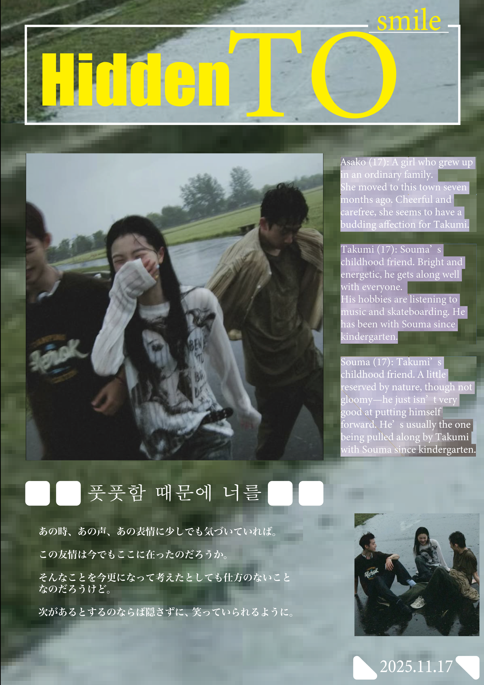

❮

❯Started career as an Art/Creative Director in 2022...
Instagram: @y_kkk_0618
G-mail: cordieofficial469499@gmail.com

❯Started career as an Art/Creative Director in 2022...
Instagram: @y_kkk_0618
G-mail: cordieofficial469499@gmail.com